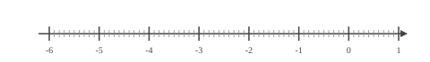
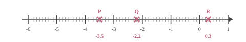
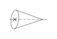

Choisis le calcul qui permet de résoudre l'équation suivante :
Pour résoudre $5x-7=13$ :
A. $\dfrac{13+7}{5}$
B. $13\times 5+7$
C. $\dfrac{13}{5}+7$
D. $(13-5)+7$
$5x-7=13$
On ajoute $7$ : $5x=13+7$.
Puis on divise par $5$ : $x=\dfrac{13+7}{5}$.
Bonne réponse : A.
03
Question
À l'aide du schéma ci-dessous, déterminer : - deux segments de même longueur ; - le milieu d'un segment ; - un triangle rectangle ; - un triangle isocèle.
- Deux segments de même mesure : [$GI$] et $[IH]$ ou $[GK]$ et $[KH]$ ou $[JF]$ et $[FH]$. - $I$ est le milieu du segment $[GH]$. - $GJH$ est un triangle rectangle en $G$, $GIK$ est un triangle rectangle en $I$ et $HIK$ est un triangle rectangle en $I$. - $GKH$ est un triangle isocèle en $K$ et $JFH$ est un triangle isocèle en $F$.
04
Question
Déterminer la valeur exacte de $JK$.
On utilise le théorème de Pythagore dans le triangle $IJK$, rectangle en $J$.
On obtient :
$\begin{aligned}
IJ^2+JK^2&=IK^2\\
JK^2&=IK^2-IJ^2\\
JK^2&=10^2-2^2\\
JK^2&=100-4\\
JK^2&=96\\
JK&={\color{#8B3C52}\boldsymbol{\sqrt{96}}}
\end{aligned}$
01
Question
Déterminer la valeur de $25\,\%$ de $89$.
$25\,\%$ de $89$ :
$\dfrac{25 \times 89}{100} = 0{,}25 \times 89 = 22{,}25$.
Donc la valeur est 22.
02
Question
Placer les points : $P(-3{,}5), Q(-2{,}2), R(0{,}3)$.


03
Question
Calculer le périmètre exact des figures suivantes. Cercle de rayon $4\text{ cm}$
Sur la figure suivante :
$\leadsto M$ est sur $[LJ]$,
$\leadsto N$ est sur $[LK]$, $\leadsto$ les droites $(JK)$ et $(MN)$ sont parallèles. Écrire la double égalité de Thalès.
Dans le triangle $JKL$ :
$\leadsto$ $M\in[LJ]$,
$\leadsto$ $N\in[LK]$,
$\leadsto$ $(JK)//(MN)$,
donc d'après le théorème de Thalès, les triangles $JKL$ et $MNL$ ont des longueurs proportionnelles.
$\dfrac{LM}{LJ}=\dfrac{LN}{LK}=\dfrac{MN}{JK}$
Remarque On pourrait aussi écrire : $\dfrac{LJ}{LM}=\dfrac{LK}{LN}=\dfrac{JK}{MN}$
01
Question
Donner l'écriture décimale de $9{,}1 \times 10^{3}$.
Sur une carte sur laquelle $3\text{ cm}$ représente $14{,}4\text{ km}$ dans la réalité,
Wendy mesure son trajet et elle trouve une distance de $10\text{ cm}$. À quelle distance cela correspond dans la réalité ?
Commençons par trouver à combien de $\text{km}$ dans la réalité, $1\text{ cm}$ sur la carte correspond.
$1\text{ cm}$, c'est ${\color{#C5607A}\boldsymbol{3}}$ fois moins que $3\text{ cm}$. $14{,}4\text{ km}\div {\color{#C5607A}\boldsymbol{3}} = 4{,}8\text{ km}$ $1\text{ cm}$ sur la carte correspond donc à ${\color{#C5607A}\boldsymbol{4{,}8}}\text{ km}$ dans la réalité. Cherchons maintenant la distance réelle de son trajet. $10\text{ cm}$, c'est ${\color{#C5607A}\boldsymbol{10}}$ fois $1\text{ cm}$. ${\color{#C5607A}\boldsymbol{4{,}8}}\text{ km}\times {\color{#C5607A}\boldsymbol{10}} = 48\text{ km}$ son trajet correspond en réalité à une distance de ${\color{#8B3C52}\boldsymbol{48}}\text{ km}$.
03
Question
Donner le nom de chacun des solides.

Cône de révolution
04
Question
Dans le triangle $HIJ$ rectangle en $H$, $HI=7\text{ cm}$ et $\widehat{HIJ}=49^\circ$. Calculer $IJ$ à $0,1\text{ cm}$ près.
Dans le triangle $HIJ$ rectangle en $H$, le cosinus de l'angle $\widehat{HIJ}$ est défini par : $\cos\left(\widehat{HIJ}\right)=\dfrac{HI}{IJ}$. Avec les données numériques : $\dfrac{\cos\left(49^\circ\right)}{\color{red}{1}}=\dfrac{7}{IJ}$
$IJ=\dfrac{7 \times\color{red}{1}}{\cos\left(49^\circ\right)}$ soit $IJ\approx{\color{#8B3C52}\boldsymbol{10{,}7}}\text{ cm}$.